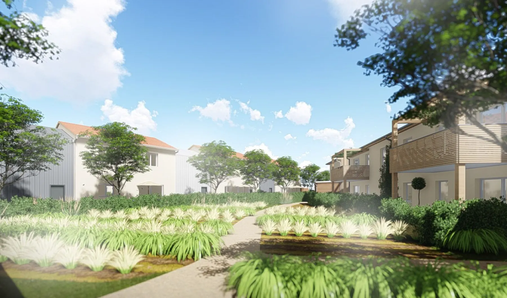
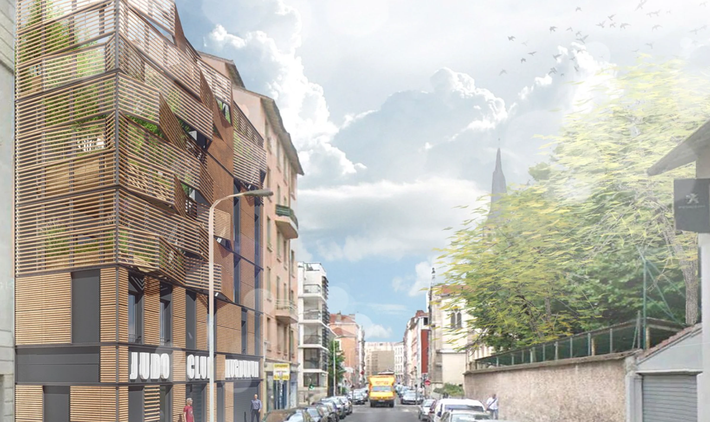
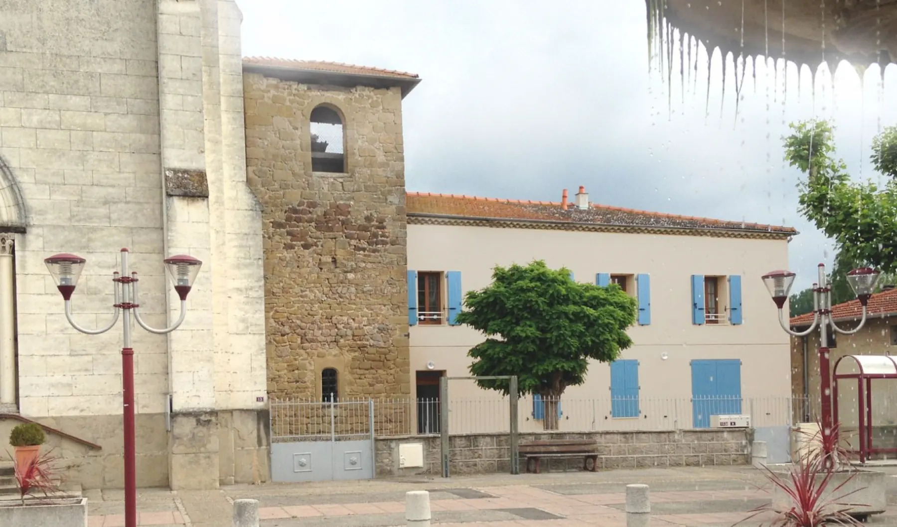
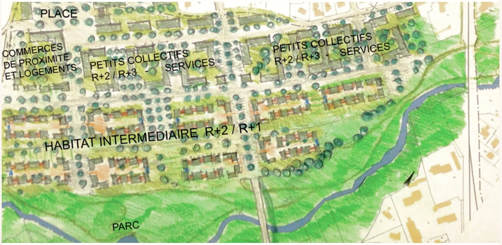
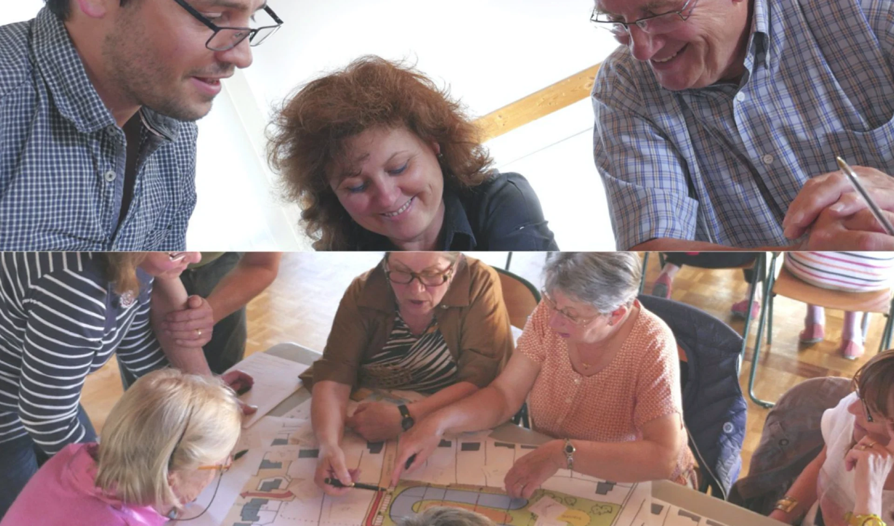

Dix-neuf projets, de la tour radar au potager.
Réalisations, chantiers en cours et études. Chaque fiche précise le maître d’ouvrage, le maître d’œuvre, la surface et le budget.
 Réhabilitation
RéhabilitationgrünboX-Vienne
Vienne (Isère) · Livraison début 2025
 Habitat
HabitatTiny House Urbaine
Vaulx-en-Velin (Rhône) · 2020
 Habitat
HabitatLogements Caluire
Caluire-et-Cuire (Rhône) · Conception 2015
 Habitat
HabitatLogements Vienne
Vienne (Isère) · 2012 – 2016
 Agriculture urbaine
Agriculture urbaineTruite et Basilic
Lyon · En cours
 Habitat
HabitatRésidence intergénérationnelle
Décines-Charpieu (Rhône) · Conception 2020
 Habitat
HabitatMaison Jarret
Décines-Charpieu (Rhône) · 2021 – 2025

HabitatLes Jardins Champblanc
Décines-Charpieu (Rhône) · Conception 2016

ÉquipementJudo Club Lyon 6e
Lyon 6e · 2016 – en cours
 Équipement
ÉquipementÉcole Condorcet
Meyzieu (Rhône) · 2015 – 2016
 Bureaux
BureauxBureaux EPF 74
Allonzier-la-Caille (Haute-Savoie) · 2014
 Bureaux
BureauxBureaux Récipro-Cité
Lyon 1er · 2016 – 2017
 Bureaux
BureauxBureaux Kyodo Yushi
Dardilly (Rhône) · 2019
 Équipement
ÉquipementTour radar du Moucherotte
Saint-Nizier-du-Moucherotte (Vercors) · 2013 – 2014

RéhabilitationRéhabilitation à Saint-Barthélemy-de-Vals
Saint-Barthélemy-de-Vals (Drôme) · 2013 – 2014
 Urbanisme
UrbanismeVallée de la Gère
Vienne (Isère) · Étude
 Urbanisme
UrbanismeProjet Couzon
Couzon-au-Mont-d’Or (Rhône) · 2016

UrbanismeLa Roche-sur-Foron
La Roche-sur-Foron (Haute-Savoie) · Reportée

UrbanismeÉco-quartier Vendœuvres
Vendœuvres (Indre) · 2015 – en cours
Plusieurs projets ne sont illustrés que par des perspectives ou des plans : des photos des bâtiments livrés (avec le nom du photographe) renforceraient la page. La Tour de Babel v2.0 et La Farandole pourront être ajoutées dès que leurs textes et images seront fournis.